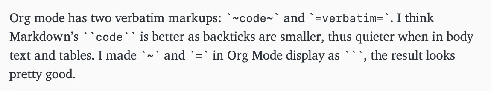

Better-looking Verbatim Markup in Org Mode
Table of Contents
Org mode has two verbatim markups: ~code~ and =verbatim=. I think Markdown’s `code` looks better as backticks are smaller, thus more unobtrusive when in body text and tables. I made ~ and = in Org Mode to display as `, the result looks pretty good:

New method ()
The old method has some problems including 1) delimiters disappear for unknown reason, and 2) we need to redefine Org Mode’s function. Here is a new method that solves both problems.
Basically we add another function to jit-lock-functions which runs after Org Mode has fontified the buffer text. Then we make any ~ and = character that has org-code face or org-verbatim face to display ` instead.
To enabled it just add org-backtick-mode to org-mdoe-hook.
(defun org-backtick-fontify (beg end) "Fontify ~ and = between BEG and END." (goto-char beg) (while (re-search-forward (rx (or "~" "=")) end t) (let* ((text-props (text-properties-at (match-beginning 0))) (face (plist-get text-props 'face))) ;; Make it display backtick if the face indicates that ;; it’s a code/verbatim delimiter. (if (or (equal face '(org-code)) (equal face '(org-verbatim))) (put-text-property (match-beginning 0) (match-end 0) 'display "`") ;; Clean up our face if it’s not a code/verbatim ;; delimiter anymore. (when (equal (plist-get text-props 'display) "`") (put-text-property (match-beginning 0) (match-end 0) 'display nil))))) (cons 'jit-lock-bounds (cons beg end))) (define-minor-mode org-backtick-mode "Display ~ and = as backticks." :lighter "" (if org-backtick-mode ;; We want to run after org-mode’s font-lock function. (add-hook 'jit-lock-functions #'org-backtick-fontify 91 t) (remove-hook 'jit-lock-functions #'org-backtick-fontify t)) (jit-lock-refontify))
Old method
The idea is to add an display text property to the markers when fontifying them. First, in org-emphasis-alist, I added an extra fourth entry for ~ and =: the text property we will add to ~ and = in fontification function.
("=" org-verbatim verbatim (display "`")) ("~" org-code verbatim (display "`"))
Sadly, there is no opportunity for hooks or advising the fontification function, I had to redefine org-do-emphasis-faces. Towards the end of the function, we first change the pcase form to extract our extra entry added earlier, we change
(pcase-let ((`(,_ ,face ,_) (assoc marker org-emphasis-alist))) ...)
to
(pcase-let ((`(,_ ,face ,_ ,props) (assoc marker org-emphasis-alist))) ...)
Then, before
(when org-hide-emphasis-markers (add-text-properties (match-end 4) (match-beginning 5) '(invisible org-link)) (add-text-properties (match-beginning 3) (match-end 3) '(invisible org-link)))
we add
(when props (add-text-properties (match-end 4) (match-beginning 5) props) (add-text-properties (match-beginning 3) (match-end 3) props))
“Wait”, you may ask, “why not use org-hide-emphasis-markers?” You can try, and you will regret it. The invisible markers make editing text around them a nightmare.
Finally, here is the full code:
(with-eval-after-load 'org (setq org-emphasis-alist '(("*" bold) ("/" italic) ("_" underline) ("=" org-verbatim verbatim (display "`")) ("~" org-code verbatim (display "`")) ("+" (:strike-through t)))) (defun org-do-emphasis-faces (limit) "Run through the buffer and emphasize strings." (let ((quick-re (format "\\([%s]\\|^\\)\\([~=*/_+]\\)" (car org-emphasis-regexp-components)))) (catch :exit (while (re-search-forward quick-re limit t) (let* ((marker (match-string 2)) (verbatim? (member marker '("~" "=")))) (when (save-excursion (goto-char (match-beginning 0)) (and ;; Do not match table hlines. (not (and (equal marker "+") (org-match-line "[ \t]*\\(|[-+]+|?\\|\\+[-+]+\\+\\)[ \t]*$"))) ;; Do not match headline stars. Do not consider ;; stars of a headline as closing marker for bold ;; markup either. (not (and (equal marker "*") (save-excursion (forward-char) (skip-chars-backward "*") (looking-at-p org-outline-regexp-bol)))) ;; Match full emphasis markup regexp. (looking-at (if verbatim? org-verbatim-re org-emph-re)) ;; Do not span over paragraph boundaries. (not (string-match-p org-element-paragraph-separate (match-string 2))) ;; Do not span over cells in table rows. (not (and (save-match-data (org-match-line "[ \t]*|")) (string-match-p "|" (match-string 4)))))) ;; beg (pcase-let ((`(,_ ,face ,_ ,props) (assoc marker org-emphasis-alist))) ;; end (font-lock-prepend-text-property (match-beginning 2) (match-end 2) 'face face) (when verbatim? (org-remove-flyspell-overlays-in (match-beginning 0) (match-end 0)) (remove-text-properties (match-beginning 2) (match-end 2) '(display t invisible t intangible t))) (add-text-properties (match-beginning 2) (match-end 2) '(font-lock-multiline t org-emphasis t)) ;; beg (when props (add-text-properties (match-end 4) (match-beginning 5) props) (add-text-properties (match-beginning 3) (match-end 3) props)) ;; end (when org-hide-emphasis-markers (add-text-properties (match-end 4) (match-beginning 5) '(invisible org-link)) (add-text-properties (match-beginning 3) (match-end 3) '(invisible org-link))) (throw :exit t)))))))))